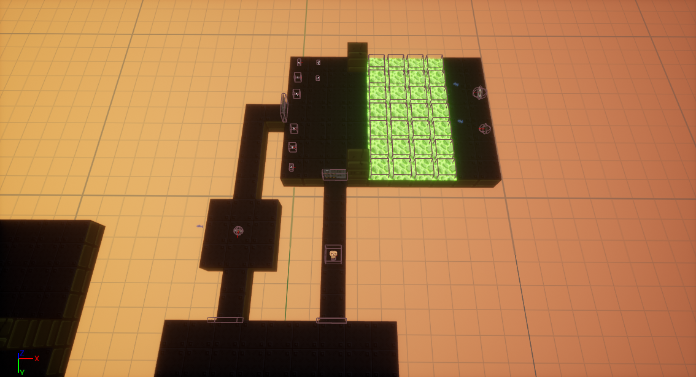

To start with getting ideas for the level, I began to experiment with the different elements of the game and how they could interact with each other. One particular idea I wanted to try was to require the player to shoot at the enemies from the other side of a pool of slime, stopping them from getting up close. I also experimented with the use of switches and the skull boss.
One particular bug I found with the ideas I'd set up was the boss spawning the minion enemies inside the windows. During testing, I found that the enemy spawned in the window when it was only one tile high (at the time, there was still a gap between the window and the ceiling). Before recording, I assumed the issue was just the enemy being spawned above the window and getting stuck, but more testing showed that it was just how the boss worked. If this is the boss I choose to use, then I will have to create an empty room to fight it in.
With the slime obstacle I had set up, I found it somewhat hard to aim properly with the Grenade Launcher and Plasma Rifle weapons I had already started it with. While the idea is still something I might want to add into my level design, I'll use the other two weapons as they are more accurate when making precise shots and have less recoil to them.
By spending some time learning how the different gameplay elements worked, it has given me a better and more focused idea on how I want my level to play.
LEVEL ITERATION 1
To get some ideas together for my level, I sketched down a basic idea for how I wanted my level to look on paper, with my plan to then refine and tweak the ideas as I convert it into a bubble map. I made three passes, adding on extra details like potential weapons, pickups and enemy placement.
Level Sketches


I specifically thought about what elements from my testing process could be used in the level, which I reflected in most of the top portion of the level (getting the red keycard) being very similar to what I had already created. I moved the roaming skull to another part of the level to have a variety of enemies in different places, focusing on the eye enemies on the top path, skull enemies on the bottom path and interspersing the crab enemies throughout.
I then converted this into two iterations of bubble maps, and created a beats and pacing diagram for what I wanted the level to be paced.
BUBBLE MAPS AND BEATS & PACING DIAGRAM
Bubble Map First Iteration
Bubble Map Second Iteration

Beats Map
Beats & Pacing Diagram

Pacing Curve

For the level pacing, I intend to try and follow the 3 act structure by having 3 distinct peaks in each 'section' of the level (beginning, middle and end). By trying to stick to this structure, I hope that it will help to pace my level well so that it is more enjoyable for the player to play through.
PIXEL & VOXEL MAPS
I then took the refined bubble map design and created a pixel map from it, using the alyout I had sketched as a basis for th level layout.
Base Level Pixel Map
Because the player passes through the middle room multiple times, I also added the changes in enemies on different layers. The full pixel map shows the enemies in the first wave, and the single room maps show the waves after getting the red and blue keycard respectively.
3D Voxel Map
Once the pixel map had been completed, I adapted it into a 3D voxel map in MagicaVoxel. To make the creation of the 3D map easier, I show all weapons as one icon, and all ammo as another. I also made versions that shows the second and third enemy waves for the main room.


Critical Path
The final part of the level designing process was to overlay a critical path onto the pixel and voxel maps to show what path I would want the player to take through the level. To do this, I overlaid and positioned the second iteration bubble map into its correct position. I overlayed it onto both the pixel map and voxel map.


LEVEL CREATION
Finally, I had all the design documents necessary to build the level in the engine. I went about this by placing in all the rooms in the level first, then going back and adding the gameplay elements like doors, enemies, weapons and pickups. Setting up the multiple waves of enemies to spawn in the main room and the boss room took the longest time as I had to make sure everything spawned as I intended. The screenshots show the level having the rooms themselves in, and then having the other elements added in after.
ITERATION 1 LEVEL PLAYTHROUGH
Iteration 1 Analysis
After playing through the level multiple times, I could easily identify some glaring flaws in the design I had created.
Firstly, I had not placed enough weapon and ammo pickups in the level, changing it from being a typically DOOM-style shooter to a game more about ammo conservation and trying to get through the level with as little as possible. While this could potentially create some interesting gameplay scenarios, this isn't something I was trying to achieve with the level and it actively works against the beats and pacing diagram I created by keeping the intensity of the level high, so I will need to tweak these elements for a second iteration. The way I envision doing this is to have a large ammo room that's unlocked by the switch as well as the door to the blue keycard; the most likely position for it is going to be in the alternate corridor as a reward for players who explore more of the level. I also want to increase the amount of ammo and health pickups that are scattered around the level, so that the player is not constantly running out of them (I might add some more in more out-of-the-way locations in the level to reward more exploration). My final idea to help improve this is to have a checkpoint-style room before the boss fight.
Next, I want to cut down on the scale of the level, meaning the player does not have to run as far. Some of the rooms feel too big for their encounters, so I want to combat this feeling of overwhelming scale by streamlining the level's design. Also, as is evident in the video, I forgot to add any checkpoints into the design of my level; adding these will immensely improve how my level plays.
Finally, I want to tweak enemy encounters so that it matches my desired pacing closer, as I feel some of the areas of the level vary wildly from what I originally intended to go for. Some enemy encounters can be over in a matter of seconds with relative ease, while others are much longer and more difficult. While this is fine for comparing the start and end of a level, I feel this is a problem that is present throughout the entirely of my level.
Despite the disappointment of how my level design ended up turning out in its first iteration, I always knew that changes would most likely be needed to be made, and it has motivated me to continue on with honing my design into a fun level.
LEVEL ITERATION 2
The first issue I wanted to combat with the design of my level was the scale. To do this, I made a copy of my pixel map with only the core gameplay elements in it and created a new version by coming up with new designs, tweaking the design in-engine and adjusting the pixel map accordingly based on whether or not I liked the way the change affected the level.
To start with, I focused on the beginning section, starting by completely removing the starting room in favour of a smaller corridor, and removing the entire upper corridor to allow me to redesign the first room. Because it is only the first room in the level, I wanted to make sure it was still simple, but not feel overwhelmingly big like it does currently. So, I decided to shrink it to a 5x5, and then test to see how it affected it in-game.
After doing some in-engine testing, it still felt like it was too big, so I decided to try out what a 3x3 would be like. This felt much more natural, so I moved on to the lower two rooms in the opening section. For the first room, I shrank the layout to be 3x3, but felt like the snipper enemies instantly rushed the player and forced them back into the previous room. I began to test out different size variations outside of the standard squares, and eventually settled on having the room be 3x5.
After cutting down the ammo room’s size to be 5x3, I then could already see how much the level’s size had been streamlined, even with just the few changes I had already made. Finally, I added the upper corridor back in, and created a basic space for the ammo room I had the idea to create.
For the main room, I decided to keep it at the same scale it was already at. Because the player passes through it often and has lots of enemy fights in it, I felt it was justified to have it be at its large scale. The only change I made was adding a checkpoint before the player enters the door. Because of the way my level is structured, the only other place I want to add a checkpoint is before the boss room. Having multiple checkpoints in the areas where the level splits off would make the level tedious to play through if you have to walk the length of the level just to get back to the area you were just in.

The main thing I wanted to do with the top part of the level was scale back the corridor size, as I felt the main room was already at sufficient size. The first corridor after the door was changed so that it was shorter. This makes the eye enemy there easier to defeat, as the player can hide behind the walls easier and avoid getting hit. In positioning the rest of the corridors, I worked backwards to try and line up the keycard corridor with the main room. I ended up tweaking the top room with the slime, adding some cover for the player as I found I was having some difficulty with the room.
For the lower section of my level, I decided to condense down the large amount of corridors the player has to traverse but add more sections into it, giving the player multiple paths to get to the same end room. When I change enemy positioning, I’ll add more enemies that the player has to fight in this area, but still add more pickups and bonuses for exploring the area. I decided this would also help balance the sections more, as I found that the top section took much longer to complete than the bottom area did, due to the much higher difficulty of the upper section.
So, after tweaking the initial room that houses the plasma rifle in-engine, I worked on the pixel map to design a set of rooms for the player to traverse. I originally planned on having the plasma rifle room be separate from what I added, but I decided to have it be the first in a grid of 9 3x3 rooms that the player must traverse through. As part of this, I also added 3 corridors which will house extra pickups for players who take their time to traverse through the level.
After I had finished designing the lower section in the pixel map, I moved into UE4 and built it in-engine. The rooms that were already part of the main design I wanted to keep the same size, as the enemies they house require a lot of mobility to defeat. The only changes I made were reducing the length of some of the corridors, and adding a small room in between the keycard room and the switch room to house some of the pickups from the switch room, such that they are not in the way of the guncrab encounter. The last part of the level was relatively straightforward to change, as I only added a room to house pickups before the boss, and the boss room itself had its preceding corridor shortened slightly.
Iteration 2 Pixel Map
Iteration 2 Level Overview
After adding some temporary enemies and pickups into the level, I played through the level to properly test how my changes had affected how the level was structured. I deliberately added a lot more ammo than I think would be necessary for the final level, just so I can finish a full play session.
ITERATION 2 LEVEL PLAYTHROUGH
Iteration 2 Analysis
When I recorded this video, I forgot to put a final checkpoint down; this is something that I intend to be in the level. An issue I found with what I had built is there was some issues caused to some rooms being higher than others, this was particularly noticeable in the room with the slime as I had forgot to set the height for the slime blocks and the other side of the room to 2, causing some interesting bugs in the wall / ceiling generation. However, all I need to do to fix this is go through and add walls to areas that need it manually through the editor. I also found that the section I added to the path to the blue keycard has long sections of walking when the player has to backtrack through it. I want to either have a path that loops the player back to the central room without them having to backtrack, or have some new enemies spawn to keep it interesting for the player.
Because of the design refinements and tweaks that I've made, upon playing my level it felt much better to play than the previous iteration did. Even with more content packed in it (and me actually finishing the level this time), it still took less time than my playthroughs of the original iteration did, which shows how much of an impact me revamping the level layout had. It also feels like I have helped to move the level towards a much more natural feeling pacing, with the larger and more intense beats feeling more evenly spread through the level now.
The next changes I want to work on for this iteration is revamping the enemy and weapon/ammo pickup locations, to work better with the changes in level layout and help the level get closer to my original desired pacing. Once I've tested that within the level and made the changes I wanted to, I'll create new versions of each part of my design document to reflect this, and see if there is any changes that I would still want to make as another, (most likely) final iteration.
LEVEL ITERATION 2 - ENEMIES AND PICKUPS
To begin with refining the enemy placement in the level, I started working from the beginning section. Because I had already shaped the rooms with the enemies in mind for this portion of the level, I decided to leave it as is, aside from adding a grenade crab enemy in the room where the two paths meet up. I played around with the idea of adding a keycard to this portion of the level, forcing the player to explore more to continue into the main section of the level, but decided that it would needlessly complicate the level’s design and left it out.
With the top section of the level, I wanted to add another enemy encounter in before the main room, as by trying to balance the length of the lower section with the top I had unintentionally gone too far and made it much longer. To help remedy this issue, I moved the grenade pickups into another room parallel to the entrance containing 2 eye enemies.
The idea of including this in my level is to balance the length by either having the player fight 2 more enemies, or make the main fight harder for themselves and take longer in it. I also wanted to make the slime room feel less crowded with pickups, so moving them into another room will greatly help to do that. After doing some playtesting, I decided to keep the changes I made as they worked well in the level.
Moving on to the lower section, through testing I wanted to change the enemies that were in the area, so I started by removing everything sans the plasma rifle pickup at the entrance. The first enemies I added in were some of the small crabs scattered throughout the area, particularly with some in the centre facing outwards so the player would always encounter some as they ran through.
Because of the open nature of how this area was structured, I always had to think about the enemy’s line of sight when I was placing them into the level. While originally envisioning the enemies being confined to individual rooms, after some testing of the initial enemies I had placed in I began to enjoy the more chaotic nature that no doors on any of the sections created. So I decided to add a handful of skull enemies that were set to roam around this section. I deliberately placed them further into this section so that the chance of them roaming outside this section of the level was minimised. I then added one that can see the player as soon as they enter this section. To get this section feeling just right, I had to do a lot of playtesting and tweaking. I eventually got rid of the roaming skull enemies in favour of roaming crabs, as they do not have the ability to open doors like the skulls do.
The final thing I set up was spawn points to spawn more enemies when the player is backtracking back through the level. After looking at my options for creating another path back, it would just turn into a long boring corridor, so I decided to take this option instead. I deliberately set up the enemies in a way that the player would always be running into more enemy lines of sight.
I was happy with how this portion of the level was now playing, but I wanted to make some changes to the level design to help better signal information to the player. I moved the keycard so it is now directly in the player’s line of sight when they leave the guncrab room, changed the switch on the wall to a block so it was more prominent, and added some more ammo for the player with the increased enemy encounters.
The final thing I wanted to do was better balance the room before the boss. I wanted to make sure that the player was fully healed and had sufficient ammo, but I still wanted to make the room I had added earlier a worthwhile place to go to, so I decided to only add weapons and super charges into that room, requiring the player to backtrack to make the boss easier.
For the boss room, I wanted to test to try and reuse my idea of having some cover from the boss in the room. I decided to make some walls again, going as far out as possible while still giving the player the room to run behind the walls for cover. I had a feeling that despite my changes it still wouldn’t work, and I’d have to remove them again; nevertheless I wanted to test as it is a feature I really wanted to help make the boss room more interesting than just being an empty box. On my first test of the area, I instantly encountered an issue with the third enemy not spawning, and the boss becoming unbeatable. So, I had to get rid of the cover once again.
I also found during my testing that the roaming crabs can open doors; to avoid the player becoming confused with doors they haven’t been through already being open, I went back and tweaked the enemy placement so that none of them were roaming (outside of two small crabs, which I’m almost certain can’t open doors), while still trying to keep that chaotic feeling intact.
I then finally went through and tested my level to find any problems in the level generation being caused by the differing ceiling heights throughout the level. One bug I encountered during testing was the boss fight becoming unbeatable after the super charge failed to activate, meaning I was stuck there until I died. It seems similar to the enemy not spawning properly when the walls were in the room that I encountered earlier.
Boss Bug Video
I never encountered this bug after this one time, so I think it was just a case of unfortunate circumstances lining up to get the game into this state.
Iteration 2 Final Level Overview
Iteration 2 Final Level Telemetry
ITERATION 2 FINAL LEVEL PLAYTHROUGH
ITERATION 2 FINAL ANALYSIS
The telemetry of the level from the Enemy Kill Map shows the gameplay now being much more interesting and varied. The level itself is much more fun to play, and now accurately emulates my projected intensity despite changing multiple parts of how the level plays. I've decided that there's no real need for another iteration of changes, and am happy to leave the level as it is. Finally, I'm going to create a new set of design diagrams that reflects the chanegs I've made in the final level.
Bubble Map First Iteration
Bubble Map Second Iteration
Beats Map
Beats & Pacing Diagram
Pacing Curve
The pacing of the level ended up being separate from the 3 sections I broke the level down into, but it still follows the structure of having 3 distinct high points that the level builds up to. Due to the non-linear nature of the bulk of my level's design, it became impossible to balance the game by having constant, increasing intensity. Instead, I tried to make the two sides (top and bottom sections) about equal to each other in intensity, despite their vastly different design, and I feel that I've achieved that well.
Pixel Map
The large pixel map shows the first wave of enemies for each rooms, I made separate maps to show the second and third waves for the central room, and the second wave for the lower room.
Back to Introduction to Games Design Page